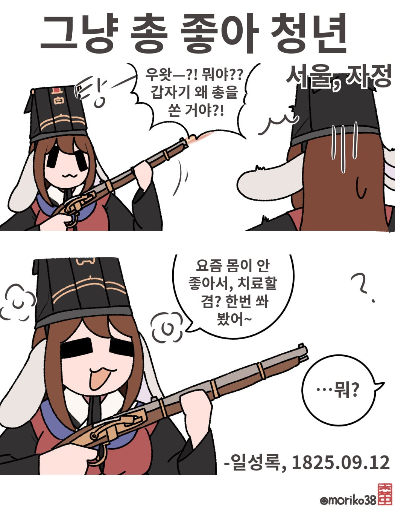
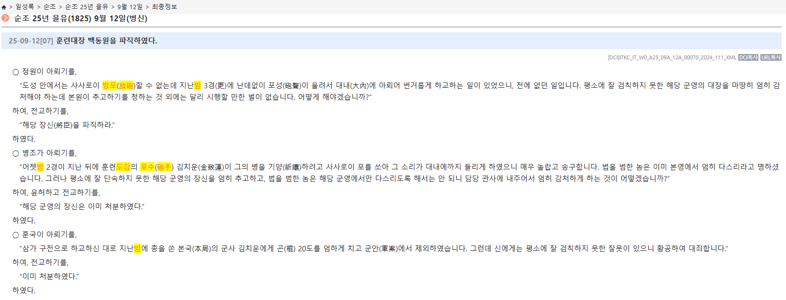

아프간 미군이 정부군 훈련하는 모습보면 개판도 그런 게핀 없는영상있었는데 그런 느낌 아니었을까요
훈련원 포수면 조선 왕실직속군이자 조선 정예군 이었음. 아프간 정부군은 저 시대 한 속오군 정도라고 봐야함.
아프간 정예도 서구권 입장에서는 잡병이듯이
조선 훈련원도 당시 시점으론 실전 경험 없으니 비슷한 취급 아녓을까
저때면 나폴레옹 전쟁 이훈데 서구권 근대 전술 징병 체계 확립 이후라 사관학교들도 생긴지 오래고
저 당시 훈련원은 홍경래의 난이라는 조선 역사상 가장 커다란 반란을 싸운 전적이 있었는데 실전경험이 없다니 뭔소리이심
훈련원 포수는 조선군 최정예였음;;
최정예라 해봤자 월급 못받아서 배추키워 팔아 살던 군대자너
근데 그건 전근대 특이었음 동시대 나폴레옹 시기도 근위대들도 술집 가드로 투잡 뛰고 있었음
전근대에 안 그런 군대를 찾기가 힘듬 1700년대 프랑스 왕실친위대 총사대들이나 1600년대 유럽 최정예 스페인의 테르시오들 보면 그들이 어떻게 먹고 살았는지 보면 더 심하면 심했지 덜하진 않았음
안그런 나라를 찾기가 힘듬
최정예 대영제국군(장교는 매관매직 사병은 범죄지+빈민의 약탈+징발 좋아 청년들)
강철과 화약, 믿음으로 이루어진...
ㅋㅋㅋ 병도 포성으로 치료한드아
병은 귀신이 몸에 깃든거 그러니까 양기의 결정체인 화약을 쏴서 내 몸에 귀신을 떨쳐내야겠다 라는 논리로 행한듯
곤장 20대를 맞았단거지? 아프겠다 ㅠ
후속 물리치료 들어간거네
이미 처분하였다 라고한거보니 걍 파직하고 끝난거아님?
총을 쏜 김치운은 곤 20대를 맞고 불명예제대 당한거고, 이 사태에 대한 책임으로 훈련도감의 장신이 훈련대장을 파직한다는 뜻으로 보입니다
처분해라
처분했다
처분했다고
이름에 '김치'들어가는 사람 중에 이상한 사람 많음
ㅋㅋㅋ 전에 우리소에 있던 김치* 계장, 수용자가 싸우면 그걸 말리고
처벌해야 했던 놈이 제일먼저 도망감 ....ㅋㅋㅋ
집에 귀신나온다고 양기가득한 대포쏘겠다한나라니까 ㅋㅋㅋ

조선이든 유럽이든 아프리카든 중동이든 나발이든 당시 사람들이 지금처럼 공교육 잘 받고 자라지 않아서 별의 별 폐급들이 존나 많았을 듯.
그냥 우리가 흔히 생각하는 인도인 느낌으로.
저 당시에는 몸이 아프거나 병이들면
귀신이 붙어서 그런건줄 아는 사람들도 있었을테고
귀신을 쫒는 방법중엔 큰소리를 내는게 있으니
그로인해 총을 쏜거려나?
미신 때문에 그런거자나? 조선 화총병이 실력이 부족할리가 없어
얜 뭔가 꾸준한거부터 시작해서 내용 근거나 이런게 확실해서 뭔가 잘될거같음
뭐니뭐니해도 토끼가 꼴림 ㅋ
훈련원 포수들은 도대체가 어떤 사람들로 이루어진걸까?